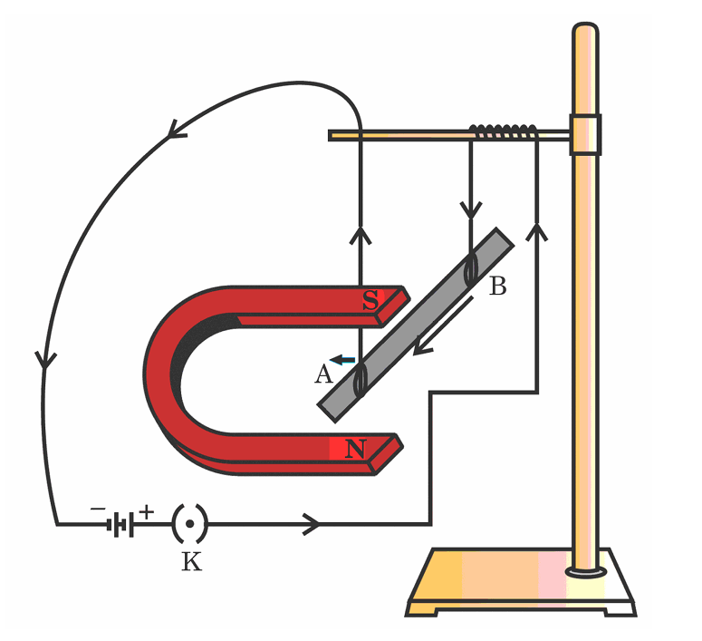
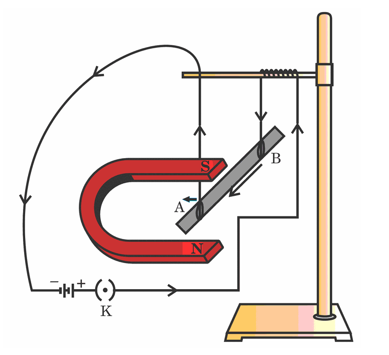

Vardaan Learning Institute
Previous Year Board Question Paper 2025
Set - 31-S
SCIENCE
Class - X
Time: 3 Hours
Max. Marks: 80
General Instructions:
- This Question Paper has 5 Sections A, B, C, D and E.
- Section A has 20 MCQs carrying 1 mark each.
- Section B has 6 questions carrying 2 marks each.
- Section C has 7 questions carrying 3 marks each.
- Section D has 3 questions carrying 5 marks each.
- Section E has 3 case based integrated units of assessment (04 marks each).
- All questions are compulsory. However, an internal choice in some questions has been provided.
SECTION A
1.
Select from the following decomposition reactions in which the source of energy for decomposition is
heat:
Options:
1
2.
The number of covalent bond(s) present in a nitrogen molecule is/are :
1
3.
Consider the reactions of dil. hydrochloric acid with the following metals: Aluminium, Copper, Iron,
Magnesium, and Zinc. The correct observation is:
1
4.
From the following, select a process in which a combination reaction occurs:
1
5.
Oxides of aluminium and zinc are:
1
6.
Application of Abscisic acid on plants promotes:
1
7.
The valves in the human heart ensure that:
(i) Oxygen-rich blood flows from left atrium to left ventricle only.
(ii) Deoxygenated blood flows from left atrium to left ventricle only.
(iii) Oxygen-rich blood flows from right atrium to right ventricle only.
(iv) Deoxygenated blood flows from right atrium to right ventricle only.
(ii) Deoxygenated blood flows from left atrium to left ventricle only.
(iii) Oxygen-rich blood flows from right atrium to right ventricle only.
(iv) Deoxygenated blood flows from right atrium to right ventricle only.
1
8.
The part of the hindbrain present immediately above the medulla is:
1
9.
In garden pea, violet colour flower is the dominant trait over white colour flower. When a parent
plant with violet flowers (Vv) is crossed with a parent plant with white flowers (vv), the possible
percentage of occurrence of traits in the F1 progeny would be:
1
10.
The end product of meiosis in a reproductive cell in plants is:
1
11.
The organism occupying the fourth trophic level in a grassland food chain is:
1
12.
The strength of the magnetic field inside a current-carrying long straight solenoid is:
1
13.
An optical device which always produces images of magnification \(m = +1\) is:
1
14.
Which factor affects the electrical resistivity of a conductor?
1
15.
A concave mirror finds its application in which case?
1
16.
In an ecosystem, 10% of energy available for transfer to the next trophic level is in the form of:
1
17.
Assertion (A): Household electric power uses live and neutral wires.
Reason (R): The potential difference between live and neutral wires in India is 220V.
Reason (R): The potential difference between live and neutral wires in India is 220V.
1
18.
Assertion (A): Decomposition of vegetable matter into compost is exothermic.
Reason (R): Decomposition reactions need energy to break down reactants.
Reason (R): Decomposition reactions need energy to break down reactants.
1
19.
Assertion (A): The clear sky appears blue due to scattering of sunlight.
Reason (R): Blue light wavelength is 1.8 times red light wavelength.
Reason (R): Blue light wavelength is 1.8 times red light wavelength.
1
20.
Assertion (A): Transpirational pull helps in water movement in plants.
Reason (R): Root pressure effect is more significant at night.
Reason (R): Root pressure effect is more significant at night.
1
SECTION B
21.
Draw a ray diagram for a ray of light falling obliquely on an equilateral triangular glass prism,
marking angle of incidence (\(\angle i\)) and angle of deviation (\(\angle D\)).
2
22.
Translate and balance the following chemical equations:
(a) Aluminium + Copper Chloride \(\rightarrow\) Aluminium Chloride + Copper
(b) Zinc + Sodium Hydroxide \(\rightarrow\) Sodium Zincate + Hydrogen
(a) Aluminium + Copper Chloride \(\rightarrow\) Aluminium Chloride + Copper
(b) Zinc + Sodium Hydroxide \(\rightarrow\) Sodium Zincate + Hydrogen
2
23.
(a) Define an alloy.
(b) In electrolytic refining of silver, name the cathode, anode, and explain 'anode mud'.
(b) In electrolytic refining of silver, name the cathode, anode, and explain 'anode mud'.
2
24.
Explain blood circulation in fishes.
2
25.
An object is placed 18 cm from a concave mirror of focal length 12 cm. Use mirror formula to find
the position of the image.
2
26.
(a) How do tendrils help pea plants to climb?
OR
(b) List two limitations of electrical impulses in cell communication.
OR
(b) List two limitations of electrical impulses in cell communication.
2
SECTION C
27.
Show the steps involved in extracting a metal of medium reactivity from its carbonate ore using a
flow sheet.
3
28.
(a) Name a compound of sodium which is prepared from sodium chloride and is used in antacids. Give
the reaction involved in its preparation.
(b) Why is it used in antacids?
(b) Why is it used in antacids?
3
29.
(a) Explain the process of translocation in phloem.
OR
(b) Differentiate between xylem and phloem based on the direction of flow, driving forces, and substances transported.
OR
(b) Differentiate between xylem and phloem based on the direction of flow, driving forces, and substances transported.
3
30.
Explain the process of urine production in kidneys.
3
31.
(a) Write the mathematical expression for Joule’s Law of heating.
(b) Calculate the heat generated while transferring 72000 C of charge in 2 hours through a potential difference of 220 V.
(b) Calculate the heat generated while transferring 72000 C of charge in 2 hours through a potential difference of 220 V.
3
32.
(a) Define biological magnification.
(b) In the following food chain: Phytoplankton \(\rightarrow\) Zooplankton \(\rightarrow\) Fish \(\rightarrow\) Human, which trophic level will have the highest concentration of non-biodegradable chemicals? Why?
(b) In the following food chain: Phytoplankton \(\rightarrow\) Zooplankton \(\rightarrow\) Fish \(\rightarrow\) Human, which trophic level will have the highest concentration of non-biodegradable chemicals? Why?
3
33.
Describe the experiment of an aluminum rod AB placed in a magnetic field.
(a) State Fleming’s Left-Hand Rule.
(b) Predict the observations if the current flows from B to A, A to B, and if the rod is aligned parallel to the magnetic field.

(a) State Fleming’s Left-Hand Rule.
(b) Predict the observations if the current flows from B to A, A to B, and if the rod is aligned parallel to the magnetic field.

3
SECTION D
34.
(a) List the differences between self-pollination and cross-pollination. Trace the events occurring
from the landing of pollen on the stigma up to the formation of fruit.
OR
(b) Where does fertilization take place in the human female reproductive system? How does the growing fetus get nourishment from the mother's blood?
OR
(b) Where does fertilization take place in the human female reproductive system? How does the growing fetus get nourishment from the mother's blood?
5
35.
(a) Define power of accommodation of the eye. Explain how the image distance in the eye changes when
we shift our gaze from a near object to a distant object.
OR
(b) A person cannot see objects distinctively beyond 5 m. Name the defect of vision. Draw ray diagrams to show the defect and its correction. Also, explain the formation of a spectrum by a glass prism.
OR
(b) A person cannot see objects distinctively beyond 5 m. Name the defect of vision. Draw ray diagrams to show the defect and its correction. Also, explain the formation of a spectrum by a glass prism.
5
36.
(a) How is pH related to hydrogen ion concentration? Why is it advised to add acid to water and not
water to acid for dilution? Compare the strength of HCl and Acetic acid.
OR
(b) Give reasons for the following:
(i) Washing soda powder becomes powdery on keeping in air.
(ii) Plaster of Paris should be stored in a moisture-proof container.
OR
(b) Give reasons for the following:
(i) Washing soda powder becomes powdery on keeping in air.
(ii) Plaster of Paris should be stored in a moisture-proof container.
5
SECTION E
37.
Case Study:
Explain the genetic basis of sex determination in humans. Mention if there are any exceptions in other animals where temperature determines the sex.
Explain the genetic basis of sex determination in humans. Mention if there are any exceptions in other animals where temperature determines the sex.
4
38.
Case Study:
Analyze the domestic circuit shown in the diagram with LED bulbs and a fan (Keys K1, K2).

Analyze the domestic circuit shown in the diagram with LED bulbs and a fan (Keys K1, K2).
4
39.
Case Study:
Hydrocarbons are classified as Saturated (alkanes) and Unsaturated (alkenes, alkynes).
(a) Write the reaction of Methane (\(CH_4\)) with Chlorine (\(Cl_2\)) in the presence of sunlight.
(b) Differentiate between saturated and unsaturated hydrocarbons based on their flame.
(c) Why do unsaturated hydrocarbons show addition reactions while saturated ones do not? What are structural isomers?
Hydrocarbons are classified as Saturated (alkanes) and Unsaturated (alkenes, alkynes).
(a) Write the reaction of Methane (\(CH_4\)) with Chlorine (\(Cl_2\)) in the presence of sunlight.
(b) Differentiate between saturated and unsaturated hydrocarbons based on their flame.
(c) Why do unsaturated hydrocarbons show addition reactions while saturated ones do not? What are structural isomers?
4